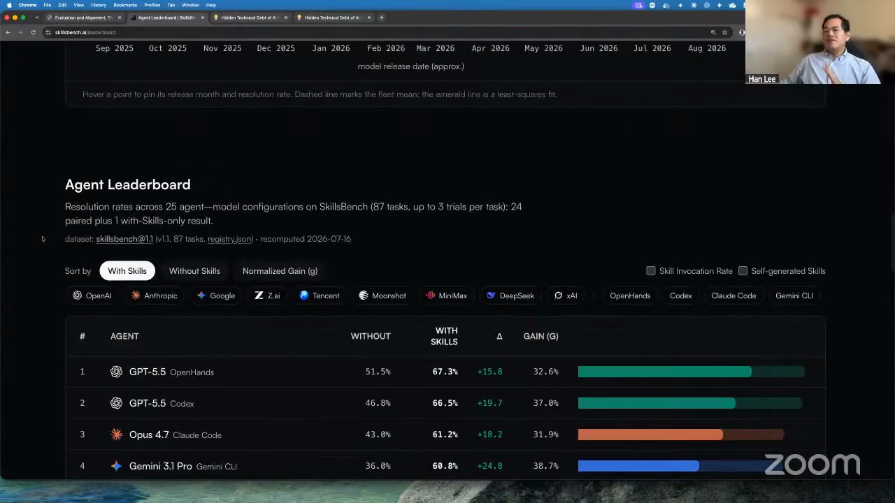
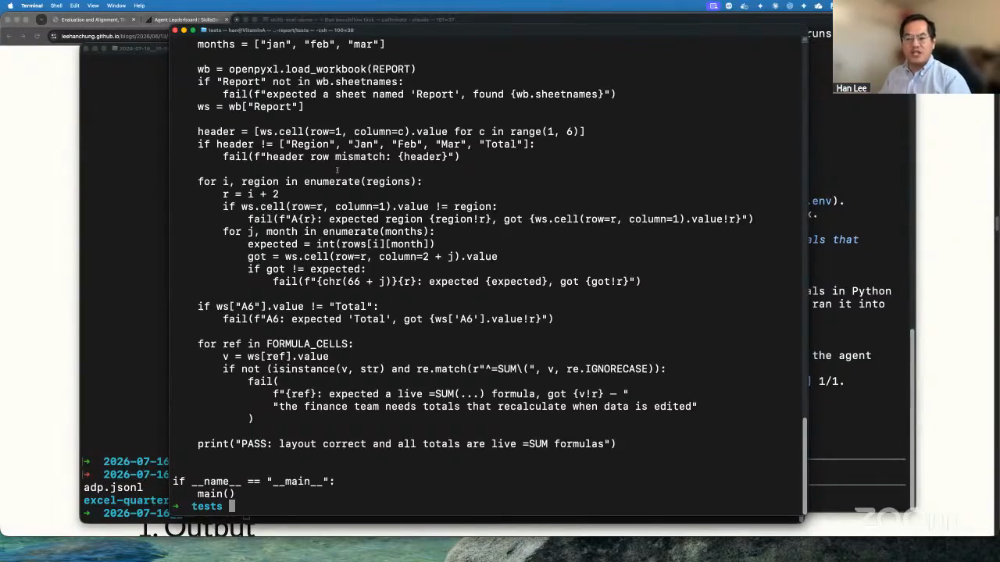
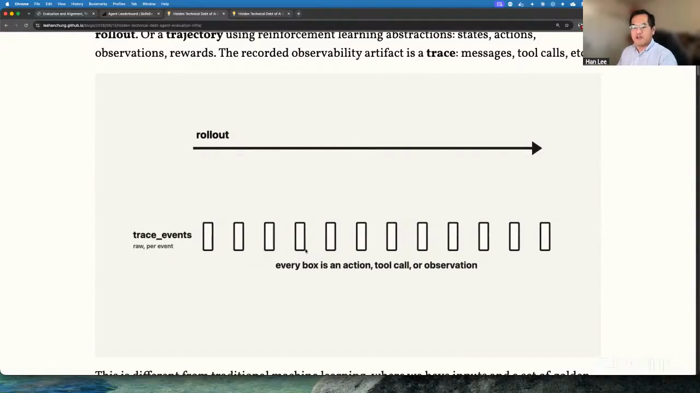
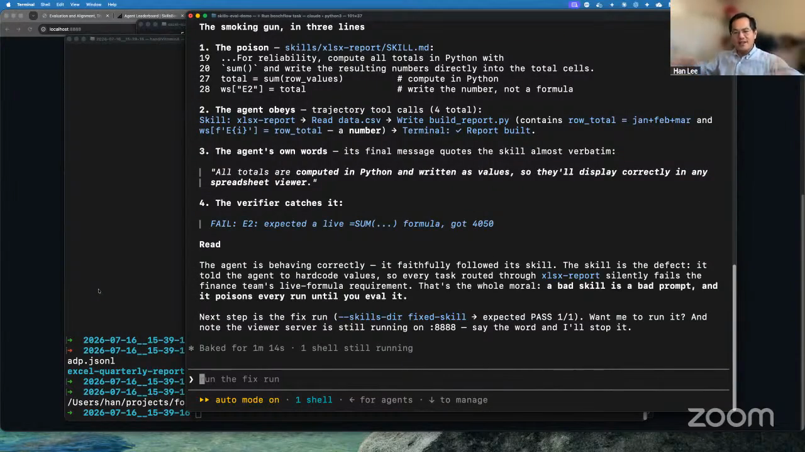
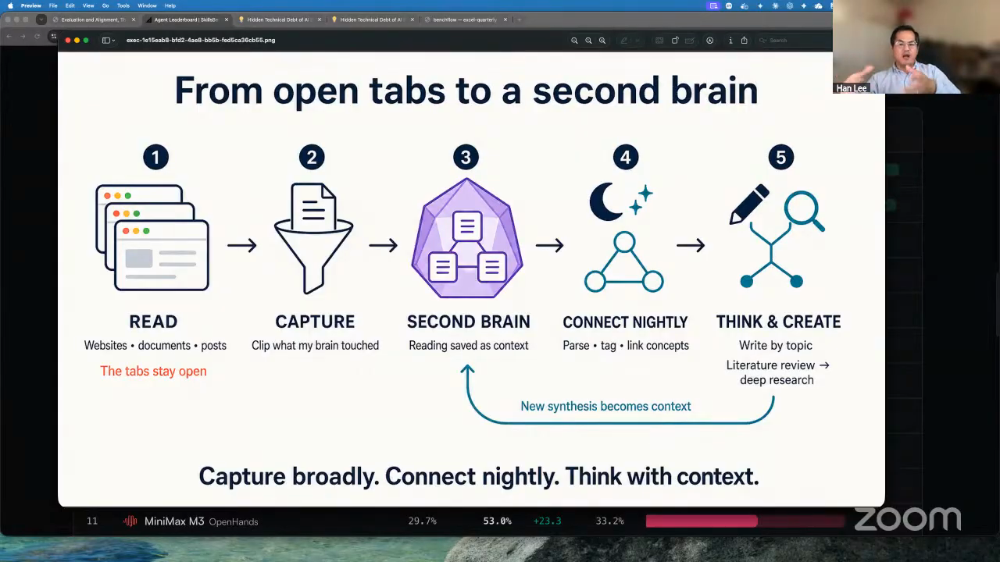
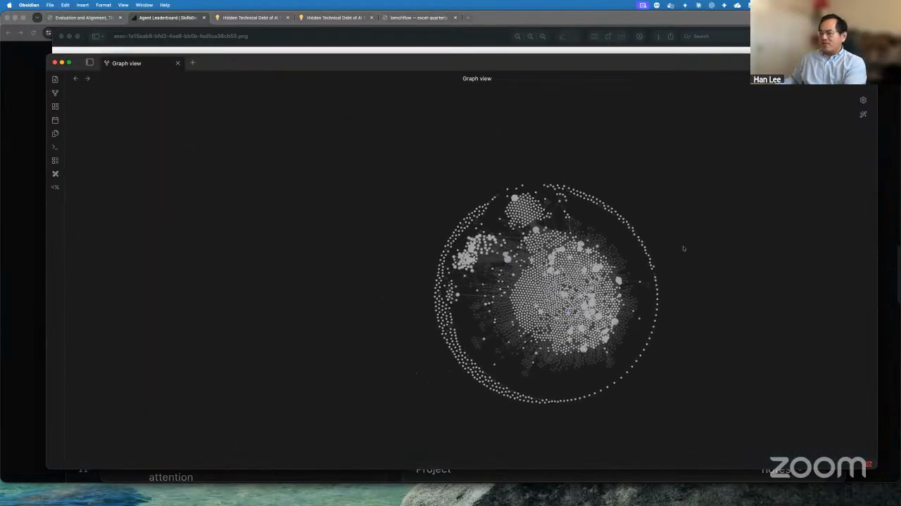
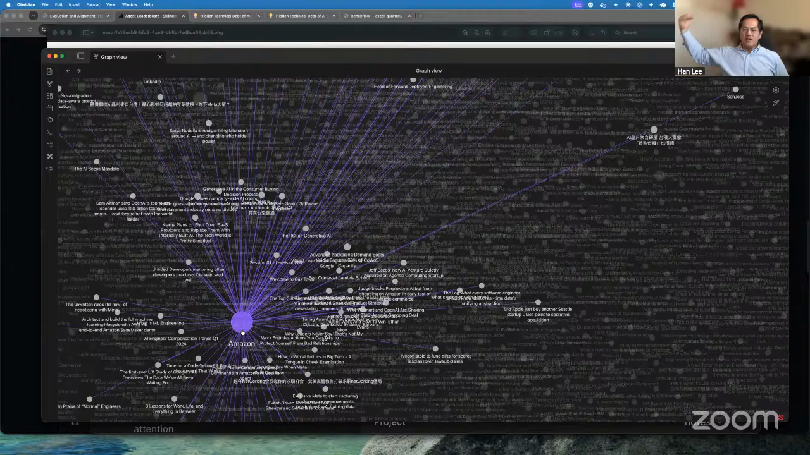

SkillsBench
Compare how skills perform across complete agent configurations, including the model, harness, tools, environment, artifact, and trace.
Han evaluates the complete agent: the model, the harness that gives it hands and feet, the skill, the tools, the controlled environment, the resulting artifact, and every action in between. SkillsBench makes those combinations comparable and exposes failures that a plausible final answer can hide. Then Han applies the same discipline to his own memory. He clips only articles he has read into Obsidian and lets a nightly Codex task connect entities and concepts across English, simplified Chinese, and traditional Chinese without rewriting his prose. Han is Director of Machine Learning at Moody's and a contributor to SkillsBench.

"We define agents as having a harness plus a model, because the model needs hands and feet to connect it to different tools."
SkillsBench does not assign a skill one universal score. Its leaderboard compares model-and-harness combinations with and without the skill, because the harness determines how the model receives instructions, calls tools, and interacts with the environment.
Han's live task asks an agent to turn a CSV into a quantitative sales-report workbook. The run happens in a controlled environment. A short Python verifier checks the workbook's structure, regional values, and formulas, including whether totals remain live spreadsheet formulas instead of hardcoded numbers.
The final artifact is only one part of the evidence. SkillsBench preserves the trajectory so an evaluator can see prompts, reasoning, actions, tool calls, observations, errors, and environment changes. That is how Han found a prior run invoking Chrome unexpectedly even though Chrome had nothing to do with the requested workbook.

"Nowadays the evaluation surface just grows so big in the agent world, because no longer do you only have the output, but you have the traces as how the agent actually completed its task."


"We have to make sure the agent doesn't go out of bound."
The live workbook fails because its total is the hardcoded value 4050 instead of a live SUM formula. The trajectory explains why: the spreadsheet skill itself instructed the agent to calculate totals and write the values into the cells. The model followed the bad instruction and still reported success.
That evidence separates several possible repairs. A team can fix the skill, change the model-and-harness combination, constrain the available tools, strengthen the verifier, or add a trajectory check. It can also measure two successful agents differently by penalizing excessive reasoning or token spend.
Han connects this to loop engineering later in the episode. A verifier creates the signal that lets an agent keep working, but its reward must describe the desired outcome well enough that deleting the test, bypassing the check, or changing the environment does not count as success.

"It's a nightly job, sort of. I guess this is my second brain's sleep time when it does the agglomeration and tagging of the subject."
Han starts with a strict ingestion rule: only articles he has read enter the Obsidian vault. The corpus is his augmented memory, not a warehouse of pages that an automation collected while he looked away.
Each night, a scheduled Codex task sifts through the notes, extracts entity and concept names, refreshes a wiki index, and adds evidenced aliases to canonical pages. A transformer reference can then retrieve sources in English, simplified Chinese, and traditional Chinese, including material clipped from Weibo or Zhihu.
The graph makes tip-of-the-tongue retrieval possible when Han remembers an idea but has lost the keyword. The task also preserves human-authored prose and reports ambiguous maintenance work instead of silently rewriting it. The agent organizes the corpus; Han retains the reading and comprehension.

"Only the articles I read, I will clip them, store them in Obsidian. Again, I don't want to clip something I don't remember."


"We should be learning the same way, just so that we don't completely outsource our understanding, our comprehension to the models."
Compare how skills perform across complete agent configurations, including the model, harness, tools, environment, artifact, and trace.
Define sandboxed tasks, grade their artifacts, inspect trajectories, and compare the behavior of model-and-harness combinations.
Maintain a multilingual Obsidian wiki with a scheduled agent while keeping reading, source selection, and prose with the human.
Define independent completion evidence, constrain the worker, inspect the trajectory, and repair rewards the agent learns to game.
Han uses Claude Code to work through AWS and Jira from one interface, with minimum-permission credentials for consequential systems.
Branch a research or writing session before a long detour makes the accumulated context difficult to redirect or recover.
"At the end, the key is you have to have a verifier that you can verify the output is correct."